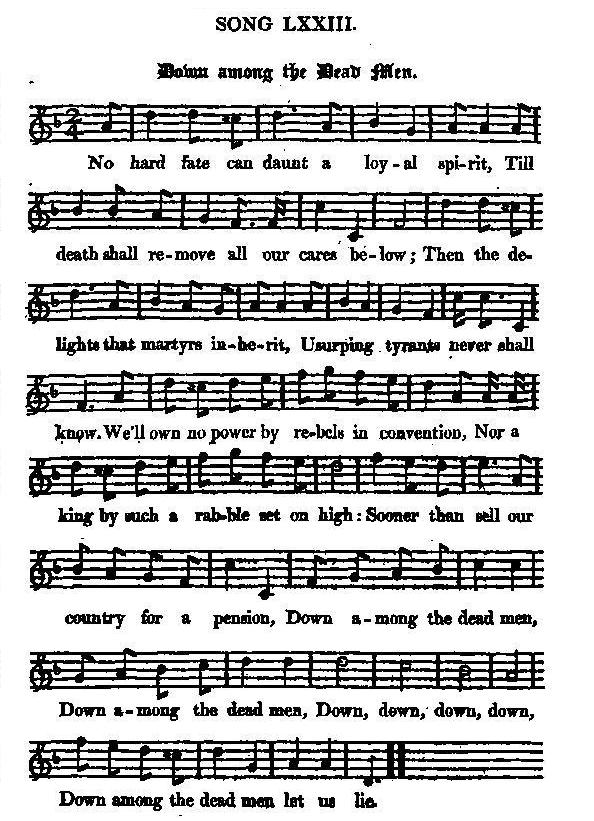

Down among the dead Men
Au royaume des morts
Author unknown
Tune - Mélodie"Down among the dead Men"
from Hogg's "Jacobite Reliques" part I, N° 73
Sequenced by Christian Souchon

|
"Is a song and air with which I am quite unacquainted. I got it among the songs sent me by young Dalguise".
Hogg in "Jacobite Relics", 1819 |
Voilà un chant et une mélodie que je n'ai jamais entendus. J'en suis redevable au jeune Dalguise."
Hogg dans "Jacobite Relics", 1819. |

|
DOWN AMONG THE DEAD MEN
No hard fate can daunt a loyal spirit, Till death shall remove all our cares below; Then the delights that martyrs inherit, Usurping tyrants never shall know. We'll own no power by rebels in convention, Nor a king by such a rabble set on high: Sooner than sell our country for a pension, Down among the dead men, Down among the dead men, Down, down, down, down, Down among the dead men let us lie! Source: "The Jacobite Relics of Scotland, being the Songs, Airs and Legends of the Adherents to the House of Stuart" collected by James Hogg, published in Edinburgh by William Blackwood in 1819. |
AU ROYAUME DES MORTS
L'adversité sur nous n'a point de prise. La mort seule mettra fin à nos maux. A nous les joies aux martyrs promises, Déniées aux tyrans déloyaux! Fini le joug des factions indociles, Ce roi par des gueux sur le trône juché! Plutôt que, traîtres, tendre la sébile, Au royaume des morts, Au royaume des morts, Oui, chez les morts, Chez les morts nous voulons reposer! (Trad. Christian Souchon(c)2010) |